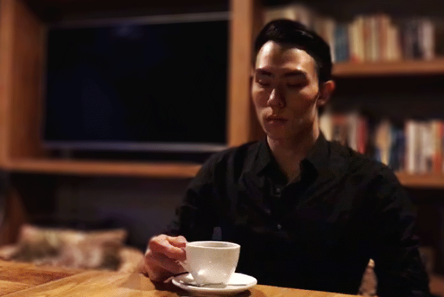
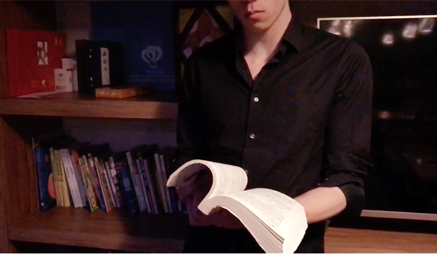

科技公司的人更应该会讨女人欢心
为什么科技公司的人更应该会讨女人的欢心？
在没有访问之前，其实编者本人是对这个问题抱有很大疑问的，科技公司？就是那个由程序猿、码农组成的只有1和2的世界吗？！
编者读书少你不要骗我，网上流传这样着一个段子，说程序猿钓到一个美人鱼，结果又默默的放到了大海里，同伴问why？他回答说：因为没有API！
程序猿:不要再编这些莫名其妙的段子了，我们怎么会有时间去钓鱼！
哈哈哈，不好意思，笑场了~
看来这个问题真的难住我们了，相信广大程序猿们也特别有兴趣了解下撩妹秘籍~那么就有请出今天的受访人——程序猿出身的肆先生来给我们答案吧。
问：肆先生，可以简单说下自己的经历吗？
2004年的春天，我来到北京，成为无数北漂大军中的一颗浮萍。那时候生活非常清苦，没有朋友，没有亲人，内心充斥着孤独与慌张。我永远忘不了来北京第二年的那个夏天，住在一间潮湿昏暗的地下室里，还没吃完一碗泡面却突然停了电，屋内闷热难耐，在一片黑暗中，物业大叔敲开了房门，给每一户都送来一只蜡烛。当我独自点燃蜡烛时，捧着那碗泡发了的面，对着空荡荡的房间，忍不住又大声说了一句谢谢，因为那天刚好是我的生日。
人是很脆弱的，但同时又是很坚强的，因为从前那个楞头小子的从未放弃，才有了今天的成绩，不敢说多好，只是终于有了根。在摸爬滚打几年后，和朋友一起合伙创立了一个小IT公司，刚开始时每天只睡4、5个小时，压榨所有的空闲时间，给人兼职模特、卖小程序来补贴公司的资金断裂，好在经过一番挣扎，有惊无险的挺了过来。
其实，今天我并不想说太多过往那些奋斗的日子，因为所有奋斗都相同，艰苦而执着。我只是想谈谈关于男人，现在的一些领悟。
前几天陪朋友买醉。因为朋友和相恋8年的女朋友分手了，在他们3个月后就要结婚的情况下，女方出轨。朋友这一跤摔的太痛，几乎爬不起来，而我也看到了一个男人真正的悲伤。朋友暗哑着声音问我到底什么样的男人最让人迷恋？是不是一定要有我这样的美好肉体？对着他醉醺醺的眼神，我并没有接话。因为我知道，他现在只想要一杯酒而不想要答案。
但是这个问题却烙在了我的脑子里，忍不住做了点总结，想给那些羡慕我好身材的兄弟们，给茫然还不知方向的从前的“我”们。
问：那么究竟什么样的男人最让人迷恋？
大抵是要有着分明的轮廓，温润绵长的成熟气息和一种自然的安全感。
01．曾经的我也自以为是过
或许有些男士会对型男嗤之以鼻，觉得只不过是一些靠外表迷惑人的肤浅家伙，我却认为这只是你为放纵自己而找的最自卑的借口罢了。不修身何以要求她人？难道要让别人既爱你的外表邋遢，又爱你的无甚才华？如果这样，你要小心了~因为你要忍受一个更不堪的她。
一个不在乎自己外表的男人，内心是没有激情的，因为你对生活已提不起精神。我来北京之后做过很多工作，在兼职模特时遇到过一位70多岁的老爷子，镜头前镜头下同样的神采奕奕，身材依然有型、穿着精细时尚。至今我还清楚地记得，有一天我们刚好同时完工结伴向外而行，老爷子蓝色衬衫外一件绅士马甲，搭配军绿色工装裤，帅气的让走在边上不修边幅邋遢的我羞愧不已。老人家可能也看出了我的不自在，他对我说：外表是内心的映射，其实你的穿着体态就能清清楚楚的透露出你的心态，气质与年龄无关，只要活着就要有自己的追求，就要让自己活得热气腾腾。我非常幸运在我年轻无知的时候能遇见一个这么精彩鲜活的老人，他改变了我的对自身外在的看法，从此我爱上了健身，而周而复始的运动更能帮助我冷静思考。

你的外表体现你对生活的态度。无关乎职业和年龄，做一个有品位有风格的男人， 是一种生活境界，也是一种对生命的尊重。男人的第一道光芒是身体的修养。
02．那些年为了面子伤的人心
如果说美好的肉体让人一时惊艳，那成熟的内心则是永久的俘获。成熟才是一个男人最值得欣赏的魅力，余秋雨说，成熟是一种明亮而不刺眼的光辉，一种圆润而不腻耳的声响，一种不再需要对别人察言观色的从容，一种终于停止向周围申诉求告的大气，一种不理会哄闹的微笑，一种洗刷了偏激的淡漠，一种无需声张的厚实，一种并不陡峭的高度。可归根结底，成熟是什么？
20岁时，兄弟们聚会我会为了面子抢着买单；而到了30岁时，我们却会默契的选择AA。你可能认为这样做未免太小气，但恰恰相反，这是一种给彼此的体面，君子之交淡如水，不以外物浸染之。当然，为女士买单永远是绅士特权。
生活里的高情商其实就是互相体谅，就是不明知顾问，就是不给人留麻烦。凡是多想一点，事情就会变的相对简单。成熟是智慧的熬制，是人性的洞悉。
03．可能你也想拥有这样的老婆
我老婆从不会约束我的去向，更不会时时查岗。不必猜测了，不是你以为的各玩各的，也不是因为她美丽的对自己足够自信，而是我们恰好都对世界充满好奇与疑虑。有时是去海底潜水，有时是去高山滑雪，有时只是去酒吧喝几杯，有时分开体验，但更多时候我们一起感受。
感受未知，感受危险，感受诱惑，而这些感知却让我们更加珍惜彼此，我愿意每天早起为她做上一顿美味的早餐，安排约会给她惊喜和浪漫。即使生活总会归于平淡，但也让我们更加明白，在这世界上只有对方才是最舒服所在。
愿意放手去体验，这便是我给她的安全感。唯有感受才能激发另一种感受。
其实，与其说性感的身材、理性的成熟和自然的安全感能让女人迷恋。不如说自制、平和和好奇让男人永远新鲜。人应该保持一颗空空如也的新鲜的心去做每一件事。即使做过一万次的事情也像第一次一样兴奋和好奇。
小结
听了肆先生对于“男人”的见解，可以用四个字来概括下编者的心情：男默女泪，男人听了会沉默，女人听了会流泪。因为这么有品格的男人竟然有老婆了，我仿佛听到来自现场女士心中的呐喊——到底是谁征服了肆先生？一定是上辈子拯救了银河系…
那么问题来了，做到这种境界的男人，谁才能足以与他相配？
大抵是要有着先见的设计，洞悉未来的先锋科技和一种探享全感境界的先觉体验。 绅士与好车更相配哦！就让我们与肆先生一样，把每一次新的启程都当作是第一次开始吧。